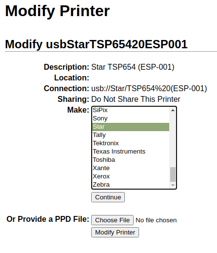
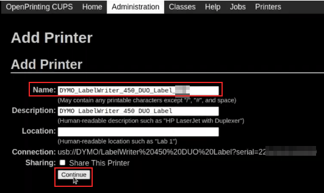

Solución de problemas¶
Conexión de la caja IoT¶
No es posible localizar el código de emparejamiento para conectar la caja IoT¶
El código de emparejamiento debe estar impreso en la impresora de recibos conectada a la caja IoT y debe aparecer en los monitores conectados.
El código de emparejamiento no aparece en los siguientes casos:
La caja IoT ya está conectada a una base de datos de Odoo.
La caja IoT no está conectada a internet.
El código solo es válido durante los primeros 5 minutos después de encender la caja IoT. Una vez pasado este tiempo, se elimina en automático de las pantallas conectadas.
La versión de la imagen de la caja IoT no es reciente. Si la imagen de la caja IoT es de una versión anterior, entonces tendrá que reiniciar la tarjeta SD de la caja para actualizar la imagen (consulte Actualizar la tarjeta SD).
Si no es ninguno de los casos mencionados con anterioridad, asegúrese de que la caja IoT se encendió de forma adecuada. Verifique que un LED verde fijo aparece junto al puerto micro USB.
La caja IoT está conectada pero no aparece en la base de datos¶
Es posible que una caja IoT se reinicie cuando se conecta a una base de datos. En este caso, puede tardar hasta cinco minutos antes de aparecer en la base de datos. Si la caja IoT no aparece después de cinco minutos, asegúrese de que tiene alcance a la base de datos y que el servidor no utiliza un entorno de varias bases de datos.
Para acceder a la base de datos desde la caja IoT, abra su navegador y escriba la dirección de la base de datos.
La caja IoT está conectada a la base de datos de Odoo pero no puede localizarla¶
Asegúrese de que la caja IoT y la computadora que ejecuta el navegador se encuentran conectadas a la misma red, ya que la caja IoT no podrá localizarla fuera de la red local.
No se genera el certificado HTTPS¶
Para generar un certificado HTTPS, es necesaria una suscripción a la caja IoT para la caja IoT. Si conecta la caja IoT antes de configurar una suscripción de IoT para la base de datos y la caja IoT, entonces el resultado será una conexión no segura.
Además, un firewall también puede evitar que el certificado HTTPS se genere de forma adecuada. En este caso, desactive el firewall hasta que se genere el certificado. Considere que ciertos dispositivos, como un enrutador con un firewall incorporado, pueden impedir que se genere un certificado HTTPS.
Ver también
Impresora¶
No se detecta la impresora¶
Si una impresora no aparece en su lista de dispositivos, vaya a la página de inicio de la caja IoT y asegúrese de que aparece en Impresoras.

Si la impresora no aparece en la página de inicio de la caja IoT, haga clic en Servidor de impresoras, vaya a la pestaña Administración y haga clic en Agregar impresora. Es probable que la impresora no esté conectada correctamente si no aparece en la lista.
La impresora imprime texto aleatorio¶
Para la mayoría de las impresoras, el controlador correcto se detecta y selecciona de forma automática. Sin embargo, en algunos casos, es posible que el mecanismo de detección automática no sea suficiente, y si no encuentra ningún controlador, la impresora podría imprimir caracteres aleatorios.
La solución es seleccionar el controlador correspondiente de forma manual. Haga clic en Servidor de impresoras en la página de inicio de la caja IoT, vaya a la pestaña Impresoras y seleccione la impresora en la lista. En el menú desplegable Administración haga clic en Modificar impresora. Siga los pasos y seleccione la marca y el modelo que correspondan a la impresora.
Nota
Las impresoras de recibos Epson y Star y las impresoras de etiquetas Zebra no necesitan un controlador para funcionar. Asegúrese de que no se seleccionó ningún controlador para esas impresoras.
Caso especial de uso de Epson¶
La mayoría de las impresoras Epson pueden imprimir recibos desde el Punto de venta de Odoo con el comando GS v 0. Sin embargo, los siguientes modelos de impresoras Epson no son compatibles con el comando;
TM-U220
TM-U230
TM-P60
TMP-P60II
Para solucionar este problema, configure la impresora para que use el comando ESC * para esto mejor.
Proceso para forzar el comando ESC*¶
Compatibilidad de la impresora Epson¶
El primer paso es revisar si una impresora no es compatible con el comando GS v 0
Ver también
Documentación de Epson GS v 0 para impresoras compatibles con
GS v 0.Documentación Epson ESC* para impresoras compatibles con
ESC *.
Si la impresora no es compatible con el comando ESC * entonces no será posible realizar el siguiente proceso. Si la impresora es compatible con el uso del comando ESC * para imprimir, siga este proceso para configurar la impresora con la caja IoT.
configuración de la caja IoT para ESC*¶
Para configurar el uso del comando ESC * para imprimir en la caja IoT vaya a la página de inicio de la caja IoT desde . Después haga clic en la dirección IP, así se le redirigirá a la página de inicio de la caja IoT.
Al elegir la impresora
Ahora haga clic en el botón Printers server (servidores de impresoras). Esto lo redirigirá a la página de CUPS. Después, vaya a , elija la impresora que se tiene que modificar y haga clic en Continuar.
Truco
Si todavía no está seguro de cuál es el nombre de la impresora, siga los siguientes pasos:
Fíjese qué impresoras están enlistadas en la página CUPS.
Apague la impresora y vuelva a cargar la página.
Ahora compare las listas para encontrar qué impresora desapareció.
Vuelva a prender la impresora y recargue la página.
Verifique de nuevo la lista para ver si la impresora vuelve a aparecer.
La impresora que desapareció y volvió a aparecer en la lista de impresoras es el nombre de la impresora correspondiente.
Nota
Puede aparecer como Desconocido en :guilabel: Impresoras locales.
Convención de nomenclatura CUPS
El comando CUPS le solicitará tres datos al administrador: Nombre, Descripción y Ubicación. No es necesario que los dos últimos datos sean específicos, sin embargo, el nombre debe contar con una nomenclatura específica para que funcione con el comando ESC *.
El Nombre debe seguir este formato: <printer_name>__IMC_<param_1>_<param_2>_..._<param_n>__.
Desglose de la convención de nomenclatura:
printer_name: es el nombre de la impresora. Puede incluir cualquier carácter siempre que no sea_,/,#, o ` ` (espacio).IMC: Son las siglas de Image Mode Column (el nombre simplificado deESC*).param_1: representa el parámetro específico:SCALE<X>: escala de la imagen (con la misma relación de aspecto).Xdebe ser un número entero que describa el porcentaje de escala que se debe utilizar.Example
100es el tamaño original,50es la mitad del tamaño y200es el doble del tamaño.LDV: Low Density Vertical (densidad vertical baja), se establecerá en High Density Vertical (densidad vertical alta) si no se especifica.LDH: Low Density Horizontal (densidad horizontal baja), se establecerá en High Density Horizontal (densidad horizontal alta) si no se especifica.Nota
Es posible que los parámetros de densidad se deban configurar de una manera específica según el modelo de impresora.
Ver también
Visite la documentación ESC * de Epson y haga clic en el modelo de impresora de la tabla superior para averiguar el tipo de configuración que debe tener.
Example
Los siguientes son ejemplos de nombres con formato correcto e incorrecto:
Formato correcto:
EPSONTMm30II__IMC__EPSON_TM_U220__IMC_LDV_LDH_SCALE80__
Formato incorrecto (no impedirá la impresión, pero el resultado podría no ser el esperado):
EPSON TMm 30II-> El nombre no debe incluir espacios.EPSONTMm30II-> El nombre es correcto, pero no hace uso deESC *.EPSONTMm30II__IMC-> El nombre no incluye__al final.EPSONTMm30II__IMC_XDV__-> El parámetroXDVno coincide con ningún parámetro existente.EPSONTMm30II_IMC_SCALE_-> El parámetroSCALEno incluye el valor con la escala.
Terminar de agregar una impresora
Después de asignar un nombre a la impresora con la convención de nomenclatura adecuada, haga clic en Continuar. A continuación, en el valor Crear seleccione Sin procesar y para el valor Modelo seleccione Cola sin procesar (en).
Tras completar estos pasos, haga clic en Agregar impresora. Si no ocurrió ningún error, se le redirigirá a la página de banners.
En este punto la impresora debería haber sido creada, ahora la caja IoT solo necesita detectarla y luego sincronizarla con el servidor de Odoo (esto podría tardar unos minutos).
Agregar la impresora al PdV de Odoo
Una vez que la impresora aparezca en la base de datos de Odoo, deberá elegirla en la configuración del PdV como la impresora IoT. Vaya a .
Nota
Si la impresora se configuró de forma incorrecta (todavía imprime texto aleatorio o el recibo impreso es demasiado grande o pequeño), no se puede modificar mediante el nombre de la impresora con CUPS. Puede repetir el proceso anterior para configurar otra impresora desde cero y crear una con los parámetros modificados.
Ejemplo de configuración de la impresora Epson TM-U220B con ESC
El siguiente es un ejemplo del proceso de solución de problemas para el modelo TM-U220B con el comando ESC *. El recibo que aparece a continuación ejemplifica un recibo que se imprime correctamente debido al formato adecuado (en teoría):

Si intenta imprimir este recibo antes de configurar el formato adecuado, imprimirá caracteres aleatorios, ya que el modelo TM-U220B no es compatible con GS v 0.

Para configurar correctamente el formato para el modelo TM-U220B de la impresora Epson, debe seguir los siguientes pasos.
Luego de consultar el sitio web de Epson para verificar la compatibilidad de los comandos GS v 0 y ESC *, puede observar que el modelo TM-U220B no es compatible con GS v 0, pero sí con ESC *.

Al agregar la impresora, CUPS preguntará qué impresora se debe agregar:

En este caso, la impresora está conectada por USB así que no aparecerá en las impresoras descubiertas en la red. En su lugar, es probable que aparezca en la selección desconocida en impresoras locales. Al desconectar el cable USB de la impresora de la caja IoT y actualizar la página, la impresora desconocida desaparece. Al conectarla de nuevo, vuelve a aparecer, por lo que se puede decir que esta es la impresora en cuestión.
Es necesario agregar __IMC a la nomenclatura del nombre, pues necesitará imprimir con el comando ESC *. Busque el modelo de la impresora en el sitio web de Epson ESC * para obtener más información acerca de los parámetros de densidad.

Para el modelo particular TM-U220, el valor de m debe ser igual a 0 o 1. Al referenciar la caja rosa de Descripción en la imagen anterior, los valores de m pueden ser 0, 1, 32 o 33. En el caso de esta impresora, el valor de m NO pueden ser 32 o 33 (de lo contrario se imprimirán caracteres al azar).
La tabla incluye los siguientes valores numéricos: 32 y 33, los cuáles ocurren si el Número de bits para datos verticales está establecido en 24. Esto significa que es una Alta densidad vertical. En caso de configurar la Epson TM-U220, deberá forzar la Baja densidad vertical, pues el modelo de la impresora no es compatible con una Alta densidad vertical para el comando ESC *.
Para agregar una Baja densidad vertical, agregue el parámetro LDV a la nomenclatura del nombre.

Haga clic en Continuar para proceder. Luego, establezca el valor Hacer a Raw y para el modelo Modelo establézcalo en Raw Queue (en).

Sin embargo, al intentar imprimir con la nomenclatura del nombre EpsonTMU220B__IMC_LDV__ se imprimirá el recibo, pero será muy grande y se saldrá del margen. Para solucionar esto, agregue una nueva impresora (y la nomenclatura del nombre) con el parámetro `SCALE<X> ` para adaptar el tamaño del recibo.
Estos son algunos de los ejemplos:
Convención sobre el nombre de impresoras |
|
|
|
|
|---|---|---|---|---|
|
|

|

|

|

|
Problemas con la impresora DYMO LabelWriter¶
Es bien sabido que la impresora DYMO LabelWriter tiene problemas al imprimir con la caja IoT. El servidor OpenPrinting CUPS instala la impresora con controladores Local RAW Printer. Para poder imprimir lo que sea, debe configurar el Make and Model (fabricador y modelo) correctos, así se hará referencia al controlador correcto al usar el dispositivo.
Además, se debe agregar una nueva impresora para reducir la tardanza en impresiones que puede ocurrir después de actualizar el controlador.
Importante
La impresora DYMO recomendada para usar con Odoo y con la caja IoT es la impresora DYMO LabelWriter 450 DUO. Para usarla primero debe estar conectada, y que se reconozca, en la caja IoT.
La impresora DYMO LabelWriter 450 DUO contiene dos impresoras en una: una impresora de etiquetas y una impresora de cintas. Seleccionar el modelo correcto (ya sea DYMO LabelWriter 450 DUO Label (en) o DYMO LabelWriter 450 DUO Tape (en)) es crucial al momento de configurar el siguiente proceso.
Para que las cosas sean consistentes, ambos procesos detallan la configuración para el modelo DYMO LabelWriter 450 DUO Label (en). Cambie el modelo cuando sea necesario.
DYMO LabelWriter no está imprimiendo¶
En caso de que la impresora DYMO LabelWriter no esté imprimiendo nada, debe instalar un controlador nuevo.
Primero, haga clic en en la parte inferior de la página de inicio de la caja IoT para abrir la consola OpenPrinting CUPS. Después, haga clic en en el menú superior, haga clic en la impresora correspondiente y seleccione Mantenimiento en el primer menú desplegable, en el segundo menú desplegable seleccione Modificar impresora.

Después, seleccione la conexión a red o impresora específica en la que se debería hacer la modificación. Haga clic en Continuar.

En la siguiente página, haga clic en Continuar para ahora configurar el Fabricante de la impresora.
En Make (fabricante) seleccione DYMO del menú. Haga clic en Continuar para configurar el Model (modelo).

En la siguiente página configure el Model (modelo) como DYMO LabelWriter 450 DUO Label (en) (o el modelo DYMO que se esté usando). Haga clic en Modify Printer (modificar impresora) para terminar de configurar el nuevo controlador. Al final, aparecerá una página de confirmación.

Cuando se le muestre la página de confirmación, en la cual se confirma que se logró actualizar con éxito, haga clic en el botón en la parte superior del menú.
Aparecerán todas las impresoras instaladas en el servidor OpenPrinting CUPS , incluyendo la que acaba de actualizar: DYMO LabelWriter 450 DUO Label (o el modelo de impresora de DYMO que esté usando). Haga clic en la impresora que se acaba de actualizar.
Para imprimir una etiqueta de prueba haga clic en el menú desplegable Mantenimiento en la parte izquierda del menú desplegable Administración y seleccione Print Test Page (imprimir página de prueba). La etiqueta de prueba se imprimirá con un retraso de diez segundos si el controlador se actualizó con éxito.

Para reducir este retraso tendrá que agregar una nueva impresora, siga el proceso a continuación.
Retraso de impresión en DYMO LabelWriter¶
Para resolver el problema de retraso después de modificar el controlador, debe volver a instalar la impresora. Para hacerlo, haga clic en para abrir la página de administración de OpenPrinting CUPS en la parte inferior de la página de inicio de la caja IoT.
Truco
Si la impresora DYMO LabelWriter 450 DUO no está imprimiendo, o si no es reconocible (tiene un controlador tipo RAW), entonces actualice los controladores del dispositivo. Consulte DYMO LabelWriter no está imprimiendo.
En la siguiente pantalla, en la sección Local Printers (impresoras locales), seleccione la impresora ya instalada, DYMO LabelWriter 450 DUO Label (DYMO LabelWriter 450 DUO Label) (o el modelo de impresora DYMO que esté utilizando). Haga clic en Continuar.

En la siguiente pantalla, modifique el Nombre a algo que pueda reconocer pues la impresora original seguirá visible. Haga clic en Continuar para continuar a la siguiente pantalla.
Ahora seleccione el Model (modelo), DYMO LabelWriter 450 DUO Label (en) (o el modelo DYMO que se esté usando). Finalmente, haga clic en Agregar impresora para completar la instalación.

Cuando se le muestre la página de confirmación, en la cual se confirma que se logró instalar con éxito, haga clic en el botón en la parte superior del menú.
Aparecerán todas las impresoras instaladas en el servidor OpenPrinting CUPS , incluyendo la que acaba de instalar: DYMO LabelWriter 450 DUO Label (o el modelo de impresora de DYMO que esté usando). Haga clic en la impresora que se acaba de instalar.

Para imprimir una etiqueta de prueba haga clic en el menú desplegable Mantenimiento en la parte izquierda del menú desplegable Administración y seleccione Print Test Page (imprimir página de prueba). La etiqueta de prueba se debe imprimir de inmediato (con un retraso de uno o dos segundos).
La impresora Zebra no imprime nada¶
Las impresoras Zebra son muy sensibles al formato del código de Zebra Programming Language (ZPL) que se imprime. Si no sale nada de la impresora o se imprimen etiquetas en blanco, intente cambiar el formato del reporte que se envía a la impresora, vaya a en el modo de desarrollador y busque la plantilla correspondiente.
Ver también
Consulte las instrucciones de Zebra sobre la impresión de archivos ZPL aquí.
Lector de código de barras¶
El lector de códigos de barras lee caracteres que no coinciden con el código de barras¶
De forma predeterminada, la mayoría de los lectores de códigos de barras están configurados en el formato QWERTY de Estados Unidos. Si el lector de códigos de barras utiliza una distribución distinta, vaya a la vista de formulario del dispositivo (aplicación ) y seleccione el formato correcto.
No ocurre nada al escanear un código de barras¶
Asegúrese de que seleccionó el dispositivo correcto en la configuración del y que el código de barras está configurado para enviar un carácter ENTER (código 28) al final de cada código de barras. Para ello, vaya a la aplicación .
El lector de códigos de barras se detecta como un teclado¶
Importante
Algunos lectores de código de barras no se anuncian como lectores de código de barras, sino como teclados USB. La caja IoT no los reconocerá.
El tipo de dispositivo se puede cambiar manualmente desde su vista de formulario (aplicación ), luego deberá activar la opción ¿Es un escáner?.

El lector de código de barras procesa los caracteres del código de barras de forma individual¶
Al acceder a Odoo desde un dispositivo móvil o una tableta, enlazado con un lector de códigos de barras mediante la caja IoT es posible que el lector procese cada carácter del código de barras de forma individual. En este caso debe seleccionar el idioma apropiado del escáner de códigos de barras en la opción Distribución del teclado de la página del formulario del escáner de códigos de barras.
Truco
Vaya a para acceder a la página del formulario correspondiente.

La distribución del teclado toma como referencia el idioma y las opciones disponibles varían según el dispositivo y el idioma de la base de datos. Por ejemplo: Inglés (RU), Inglés (EE. UU.), etc.
Caja registradora¶
La caja registradora no abre¶
La caja registradora debe estar conectada a la impresora y la casilla de verificación Caja registradora debe estar seleccionada en la configuración del PdV. Para hacerlo, vaya a la aplicación .
Báscula¶
Las básculas son muy importantes para el proceso de pago, sobre todo para los productos que se venden por peso y no por precio fijo.
Configuración de las básculas Ariva S¶
Odoo ha determinado que las básculas Ariva (fabricadas por Mettler-Toledo, LLC.) de la serie S necesitan modificaciones en ajustes específicos y que también necesitan un cable Mettler USB a RJ45 específico para que las básculas funcionen con nuestra caja IoT.
Para configurar la báscula Ariva de la serie S de forma correcta y que la caja IoT la reconozca deberá seguir este proceso de configuración.
Importante
Es fundamental que use el cable oficial USB a RJ45 de Mettler durante este proceso.
Cable¶
El número de pieza de Mettler es 72256236 - cable USB a PdV (o POS). Contacte a Mettler o a un distribuidor autorizado para adquirir un cable auténtico. Tome en cuenta que ningún otro cable funciona para esta configuración, solo el de Mettler. Si decide usar algún otro cable conectado a un adaptador serial a USB, considere que entonces no funcionará.

Configurar¶
Consulte la guía de configuración de Mettler para básculas Ariva de la serie S para realizar los siguientes pasos: Guía del usuario de la báscula de cobro de Ariva.
Vaya a la página 17 del manual anterior, en la sección Configuración. Esta guía incluye las posibilidades de configuración para las básculas Ariva de la serie S.
Siga las instrucciones, junto con el siguiente proceso, para configurar la báscula en modo de configuración. Primero, mantenga presionado el botón >T< durante ocho segundos o hasta que aparezca CONF .
Después presione >T< hasta que aparezca GRP 3 y luego presione >0< para confirmar.
En 3.1, asegúrese de que el ajuste corresponda a 1 (Puertos COM virtuales USB). Presione >T< para avanzar entre las opciones del grupo 3.1.
Una vez que 3.1 sea 1, presione >0<**para confirmar su selección y después presione **>0< hasta que aparezca GRP 4.
Ahora presione >T< hasta que aparezca EXIT.
Importante
No haga ningún otro cambio a menos que sea necesario.
Después de que aparezca EXIT, presione >0< y luego vuelva a presionar >0< para SAVE (Guardar). La báscula se reiniciará.
Por último, reinicie la caja IoT para que reconozca las modificaciones en la configuración de la báscula. La báscula aparecerá como Toledo 8217 después de que se reinicie, en lugar del nombre anterior que era Adam Equipment Serial.